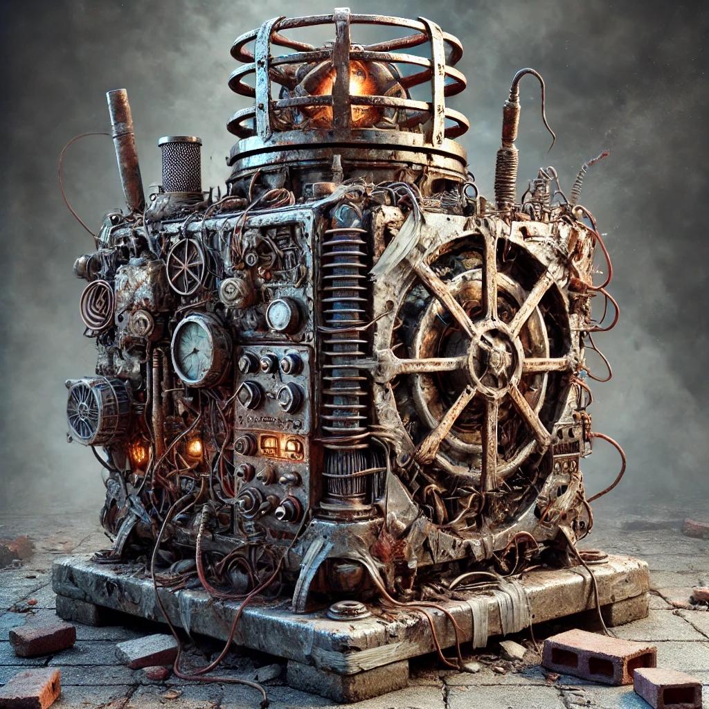
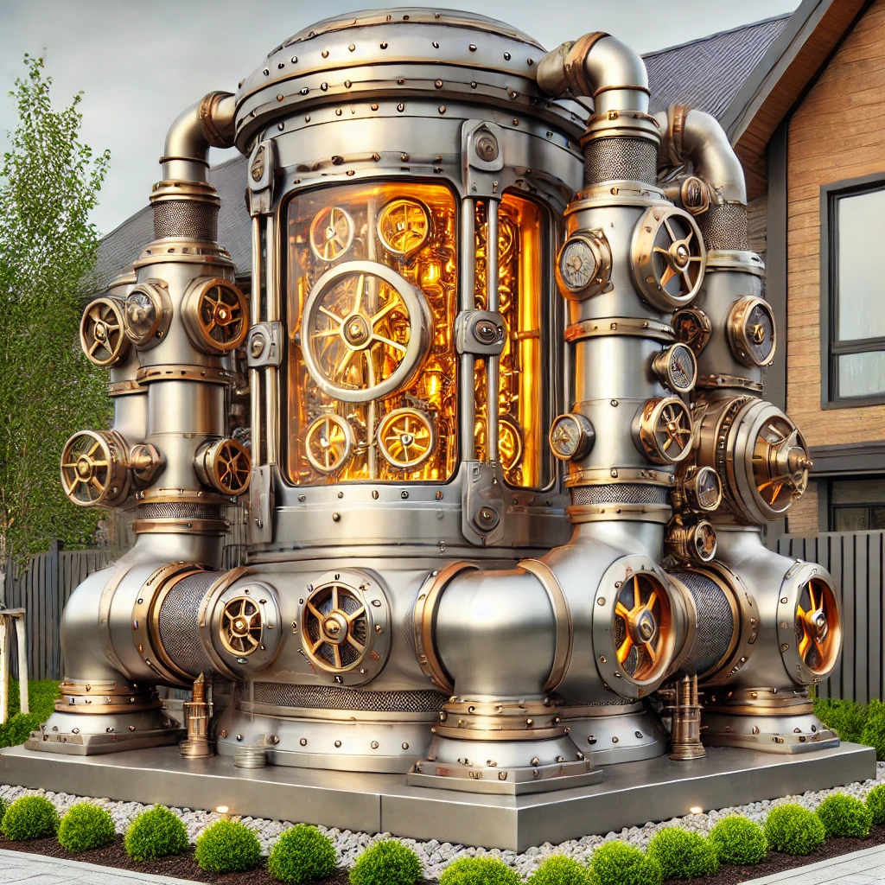

The use and maintenance of Wards vary significantly across different social classes, reflecting the stark disparities within society.
Working Class:
Daily Contributions: For the working class, life includes a daily visit to the neighborhood Ward to pay their share of the energy cost. Contributing Copper Aetherium, these payments are vital for maintaining the Ward's energy field, as the lower quality of the coins means they are quickly consumed by the device.
Social Pressure: Since everyone in the neighborhood relies on the Ward for protection, there is a strong social expectation to contribute. Failure to do so often results in being ostracized or even expelled from the community. The daily toll is just one of many expenses that leave the working class with little to no savings.
Middle Class:
Weekly Contributions: The middle class enjoys a slightly more comfortable routine, making weekly payments to the neighborhood Ward using Cobalt Aetherium. These coins, being of higher quality, provide ten times the energy of Copper Aetherium, allowing for less frequent contributions.
Social Appearances: While there is still an expectation to contribute, in middle-class neighborhoods, the act of paying one’s dues becomes more about maintaining social appearances. The regularity and manner of contributions are closely observed, though the consequences for failing to contribute are less severe than in working-class areas.
Poor:
Desperate Contributions: In the poorest neighborhoods, the situation is dire. Wards are barely kept active by the desperate contributions of residents, who scrape together whatever coins they can find. Even children, aware of the importance of the Ward, rush to contribute their meager earnings.
Community Resilience: Despite the lack of external oversight, there is an unspoken understanding among residents that the Ward must be maintained at all costs. The shared struggle to keep the Ward active fosters a strong sense of community resilience.
Upper Class:
Monthly Contributions or Private Wards: The upper class typically makes monthly payments to their neighborhood Ward, often in the form of Opal or Gold Aetherium. Some, however, have the luxury of maintaining private estate Wards, allowing them greater independence and security.
Elegance and Exclusivity: In these affluent areas, Wards are not just functional; they are also designed to be aesthetically pleasing, often integrated seamlessly into the landscape or architecture of the estate. The contribution process is discreet, with little to no social pressure, as wealth easily covers the necessary expenses.
Wards, while fundamentally similar in function, differ significantly in appearance depending on their surroundings and the social class of the area they protect.
Working and Poor Class Wards:
These Wards are typically older, dirtier, and show signs of wear and tear. They are often constructed from repurposed materials, with visible patches and makeshift repairs. The protective energy fields they generate are weaker and more prone to fluctuations, reflecting the lower quality of the Ether supplied.

Middle Class Wards:
Wards in middle-class neighborhoods are better maintained and slightly more refined. They are often housed in small, purpose-built structures, with modest decorative elements that reflect the community’s relative prosperity. The energy fields are stable, providing reliable protection with minimal disruption.

Upper Class Wards:
These Wards are masterpieces of Aetherial design, often custom-built to complement the luxurious surroundings of an estate. They are constructed from the finest materials, with intricate engravings and glowing neon accents that highlight their elegance. The energy fields are powerful and stable, providing near-impenetrable protection.
Traveling circuses rely on mobile Wards to protect their caravans and campsites. These portable devices are loaded onto the back of a carriage and require a skilled Warden to operate. The demands on these Wards are significant, as they must maintain a strong protective field while in constant motion, consuming large amounts of Aetherium in the process.
Design and Functionality:
Mobile Wards are robust and versatile, designed to withstand the rigors of travel. They are larger than stationary Wards, due to reinforced structures and additional energy storage compartments. The energy collector is designed to be more sensitive, drawing in phantasmal energy from a wider area to maintain the field.
Energy Consumption:
Due to the high energy demands, circuses often pool resources to fuel the Ward, with performers and staff contributing their Pax Aetherium. The Warden’s skill is crucial in managing the energy flow and ensuring that the protective field remains active throughout the journey.
Aesthetics:
Despite their utilitarian purpose, mobile Wards often feature decorative elements that align with the circus’s theme. These can include vibrant paintwork, glowing neon lights, and intricate patterns that add a touch of flair to the otherwise industrial device.